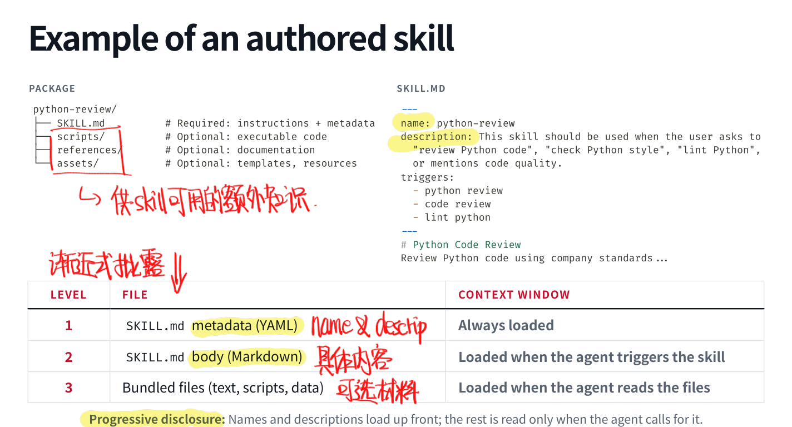
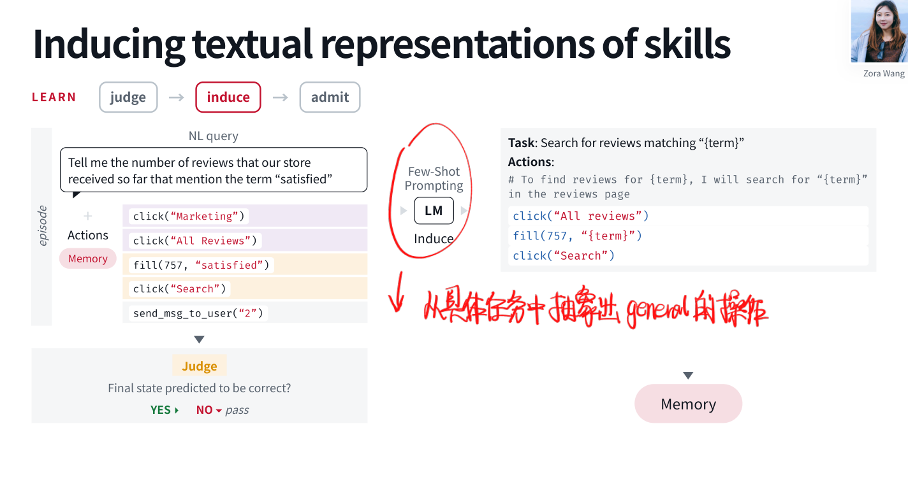
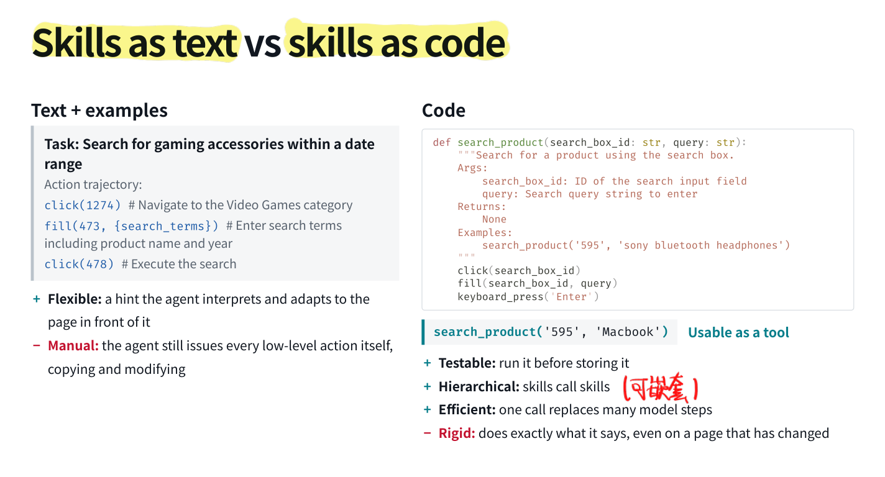
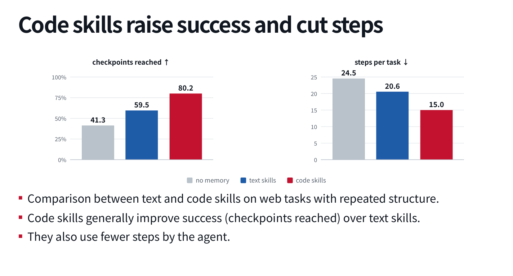
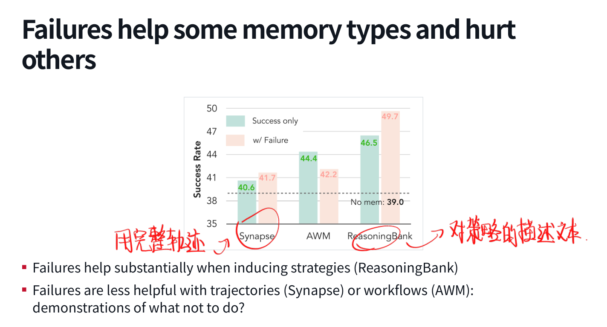
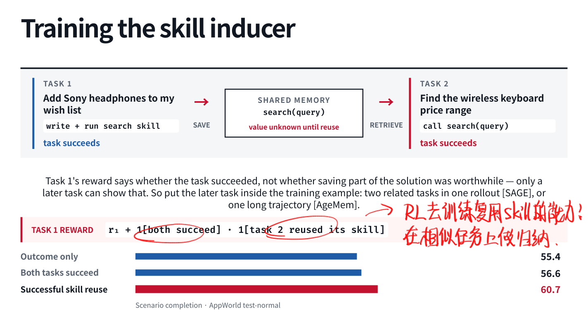

让 Agent 搜一次商品，再让它搜另一种商品，很多动作其实完全一样：进网站、找搜索框、填关键词、提交。人做多了会形成一套习惯，Agent 却可能每次都重新摸索。Memory 与 Skills 想解决的，就是怎样把这些重复结构留下来。
这一讲有意思的地方在于，它没有把「记住」当成一个理所当然有益的动作。保存什么、怎样表示、什么时候取出来，以及什么时候该删，几乎都能单独构成一个问题。
4.1 经验应该存在哪里？
改变 Agent 后续行为，大致有三个位置可动：
| 位置 | 优点 | 代价 |
|---|---|---|
| 当前上下文 | 保留具体经历，信息保真度高 | 长、贵、噪声多，仍需决定什么重要 |
| 外部产物 | 可查看、编辑、检索和迁移 | 需要归纳、筛选、维护 |
| 模型权重 | 可形成广泛行为变化，减少反复读指导的需要 | 更新慢、不透明、与模型绑定 |
外部记忆的意义就在中间这层：不用每次更新参数，也不用把所有历史都带在当前对话里。但「存一个文件」只是开始，文件里的内容要怎样影响后续决策，才是重点。
经验本身又有不同颗粒度。Episode 是完整的观察—动作轨迹，适合保留具体对象、价格与发生顺序；Fact 是可更新的事实，例如「这个网站只在详情页显示价格」；Skill 则是可复用的行动方法，例如「搜索 → 打开结果 → 核对详情」。
Memory 与 Skill 因此有交集。Memory 强调来自自身交互并保存下来的内容，Skill 强调怎么做；人写的发布 checklist 是 skill，未必是 Agent 的经历，Agent 从成功搜索中归纳的方法则两者都是。
4.2 人写的 Skill：把重复要求变成可调用规范
比如每次 review 都要求 Black、Ruff、类型标注、特定 docstring 和测试规范，与其反复粘贴，不如整理成一个 skill package：
python-review/
├── SKILL.md
├── scripts/
├── references/
└── assets/
SKILL.md 的 metadata 提供名称和适用描述，正文写流程，其他目录放脚本、参考资料和模板。具体平台支持哪些字段会有差异，重点是 描述要让 Agent 能选中它，正文要让 Agent 知道怎么执行它。
Progressive Disclosure
所有 skills 全文都常驻上下文，显然很快又回到上一讲的问题。因此先只加载名称与描述，匹配到任务后读取正文，真正需要某个参考文件时再继续加载。
这里有个细节挺重要：执行 python scripts/run_checks.py，进入上下文的可以只是检查结果，脚本代码未必需要被模型完整读一遍。也就是说，skill 不只是提示词库，还可以把固定工作交给程序执行。

有 Skill 就一定更好吗？
SkillsBench 从大量候选技能和任务中筛选出 87 个、覆盖 8 个领域的实际任务，比较 18 种模型—Harness 配置在有无技能时的表现。平均通过率从 33.9% 提升到 50.5%，但 87 个任务里仍有 13 个变差。
而且这里是人给任务选好技能包，不能把结果直接理解成 Agent 自己检索技能已经同样可靠。1–3 个技能与较短正文的组别显示更大增益，也只是该实验中的关联，不足以推出所有技能都越短越好。我的理解是：明确、聚焦的方法有帮助，无关指导也可能挤掉更好的默认策略。
Skill 可以由 Harness 自带、人自己写或安装，也可以在 Agent 完成一次流程后由它起草。后者挺自然：刚做完，具体坑点还在上下文里，比凭空要求它设计一个万能技能靠谱。写完仍要试几次。
维护同样要形成反馈循环。OpenHands 的 review skill 会记录运行、观察人实际保留了多少建议、分析反复出现的错误，再修改说明。比如忽略仓库惯例、遇到严重问题还 approve，就值得变成具体检查要求。看起来又回到了软件维护，只是被维护的对象多了一份 Markdown）
4.3 外部记忆如何读写与更新？
MemGPT 把有限工作上下文与外部存储连接起来，Agent 可以通过函数调用读取、检索或写入。重点是主动管理：什么时候把信息移出当前窗口，什么时候再拿回来，不一定全部由固定检索器决定。
写入也不应该只有 append。面对新消息，至少有四种操作：
- ADD：此前没有相关记忆，新增。
- UPDATE：新信息修改已有事实。
- DELETE：原记忆被否定或不再有效。
- NOOP：已经存过，或没有保存价值。
假设用户换了地址，同时保存旧地址与新地址却不标明关系，后面检索到哪个全靠运气，这不能算「记忆很丰富」。重复、冲突与过期信息都是实际问题。
Reflexion 则保存对一次尝试的反馈，再用反思指导下一次尝试。例如把「问的是一系列战役，却只答了其中一场」这样的失败原因明确写下来，第二次就可以改变回答范围。这是用语言形式的反馈改变后续上下文，并没有在这一步更新模型权重。
另一类是 similar-trajectory conditioning：离线收集或在线积累完整轨迹，按任务 embedding 检索相似经历，作为 few-shot 示例。ExpeL、Synapse、Agent S、ICAL 等工作采取了不同形式的经验表示与使用方式。保存整条轨迹保真，但它长、具体，也可能把与当前任务无关的操作一起带进来。
4.4 从 Episode 中归纳 Skill
接下来才是我觉得更像「学习」的部分：Agent 观察多个任务，从中抽出共享子程序，并把商品名、搜索词等非固定内容参数化。
比如「统计包含 satisfied 的评论」，可以分成 open_marketing_reviews() 与 search_reviews(term)。下一次换成 great，不需要再记一遍所有页面跳转。AWM 的文本工作流归纳强调抽取重复的动作片段、避免相似重叠流程，并把变化部分写成有意义的变量。
这也有更早的程序归纳脉络：Voyager 在 Minecraft 中积累可调用函数，复杂技能调用已有技能；DreamCoder 用可复用函数压缩已解程序并帮助后续搜索；Stitch 高效寻找共享程序结构；LAPS 用自然语言引导归纳与搜索；LILO 再把 LLM 写程序、符号压缩、命名和文档组合起来。先解具体任务，再形成可复用抽象，并不是 Agent 时代才突然发明的想法。

在线设置中，任务顺序到达，每解决一个任务就更新技能库，后续任务继续使用。评估的是沿这条任务流的累计成功率。此时要报告任务顺序、记忆初始状态和更新规则；它和每道题都从同一空白状态启动的静态评估不是一回事。
4.5 Text Skill 与 Code Skill
文本技能可以写「先进入商品类别，再填关键词，最后搜索」。Agent 仍根据当前页面寻找元素并逐步操作，因此比较灵活。代码技能则可以直接封装：
def search_product(search_box_id, query):
click(search_box_id)
fill(search_box_id, query)
keyboard_press("Enter")
一次调用替代多轮底层动作，技能还可以调用其他技能。若原来 50 步都在重复导航，封装以后几次高层调用就够了，这相当于把任务在动作空间中压缩了。

ASI 在五个 WebArena 网站上的平均结果中，无记忆、文本技能、代码技能的 checkpoint 完成比例分别为 41.3、59.5、80.2，平均步数为 24.5、20.6、15.0。这里的 checkpoint 比例别误当成整任务成功率；但成功进展增加、交互减少这两个方向很直观。

代码还有一个我很在意的优点：可以先测试，再入库。 Lint 能发现定义了 color 参数却根本没使用；执行测试能检查技能是否真产生预期结果。候选技能先 practice，失败就 revise，而不是生成了一段看起来不错的函数就永久保存。
代价是脆弱。一个网站用下拉框排序，另一个网站点击后打开侧栏，写死的 select_option 就不通用。PolySkill 采用统一抽象接口、各网站实现底层原语的方式，让高层组合共享，但网站适配仍要有人做。接口叫得很通用，不会自动使实现通用。
| 表示 | 更擅长什么 | 主要问题 |
|---|---|---|
| Episode | 保留具体经历 | 长、迁移困难 |
| Text skill | 提供可适应的指导 | 底层动作仍需模型生成 |
| Code skill | 执行、组合、测试与提效 | 依赖接口与环境，可能僵硬 |
4.6 失败经历怎样才有用？
一个商品搜索失败的例子很典型：搜索「Sony 蓝牙耳机」，得到 5,578 个跨类别结果，每页只有 12 个，Agent 然后开始下一页、下一页……最后步数用完，用户什么也没收到。很眼熟，和人类在低效操作中获得忙碌感差不多）
从中该抽取的是优化查询、调整每页数量、使用类别过滤等策略。如果把整条不断翻页的轨迹当示范，模型未必能自然领会「请不要学这个」。ReasoningBank 的策略归纳从失败中获益更明显，而轨迹检索或动作工作流的收益较小，甚至可能受损。
因此「失败数据有没有用」取决于表示与使用方式。反思后的策略、带清楚标签的反例、原样模仿的动作序列，根本不是同一种训练或记忆信号。

归纳之前的 judge 也会出错。用模拟 judge 把真实标签按固定概率翻转，可以隔离判断准确率的影响；相关实验中，较宽的准确率范围仍可能产生收益，但准确率当然重要。这个模拟并不覆盖真实 judge 的所有偏差，例如系统性偏爱某种轨迹，所以不能据此宣布弱 judge 随便用。
4.7 检索、整理和遗忘
多取几条经验不一定更稳。过度检索会引入不相关策略，增加上下文负担，还可能让模型放弃本来可行的方法。ReasoningBank 与人工技能实验都能看到这种现象。经验库变大以后，选择机制的重要性也跟着变大。
记忆 consolidation 因而包括合并、修订和淘汰。TroVE 的一种启发式会删除使用次数少于 的函数， 是已见样本数。这个阈值本身不是重点，重点是技能并非只增不减。低频也不一定无用，罕见但重要的操作不能只按使用数草率删除。
可以把整个生命周期写成：经历 → 判断 → 归纳 → 验证准入 → 保存；使用时检索、执行并记录结果；维护时再添加、修复、合并或停用。每个环节都可能引入错误。
4.8 怎样训练一个好的 Skill Inducer？
这里有个 reward attribution 问题：任务 1 成功，只证明当前任务完成了，不能证明刚保存的 skill 值得长期保留。它有没有价值，得等任务 2 复用时才知道。
SAGE 把相关任务放到同一 rollout，AgeMem 一类路线则把记忆操作放进更长的轨迹，让后续收益进入训练视野。一个示意奖励是：
AppWorld 上的一组对比中，只看 outcome、奖励两个任务成功、奖励成功技能复用，对应 scenario completion 为 55.4、56.6、60.7。它提示训练目标应覆盖「未来有用」这件事，而不仅是「现在写了一个技能」。同时也得防止为拿复用奖励而硬调无关技能，真正想优化的还是跨任务效果。

最后，人和 Agent 各自适合做的决定也不同。已有明确规范，人更适合提供权威内容；需要从交互里发现流程，Agent 可以探索。规则性或高后果判断需要明确责任，便宜可执行的检查适合自动化；频繁重复的路由与可观测漂移，也可以交给系统持续处理。
我现在对 Memory 的期待反而具体了一些：不需要它什么都记住，希望它能分清什么值得留下、什么时候该拿出来，以及什么时候承认自己记错了。最后这一条，人类自己也未必做得多好。